6 Merging Datasets
Let’s start by loading the tidyverse package
library(tidyverse)Clear everything to make sure there’s nothing leftover in our environment
rm(list = ls())Next, we load three datasets of universities, cities, and states.
universities <- read_csv("https://raw.githubusercontent.com/altaf-ali/tidydata_tutorial/master/data/universities.csv")
cities <- read_csv("https://raw.githubusercontent.com/altaf-ali/tidydata_tutorial/master/data/cities.csv")
states <- read_csv("https://raw.githubusercontent.com/altaf-ali/tidydata_tutorial/master/data/states.csv")Let’s see how we can merge the universities dataset with the cities dataset.
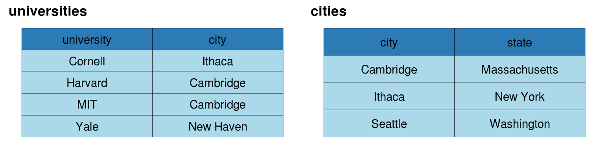
6.1 Left Join
universities %>%
left_join(cities, by = "city")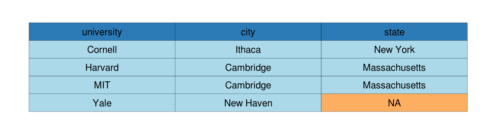
6.2 Right Join
universities %>%
right_join(cities, by = "city")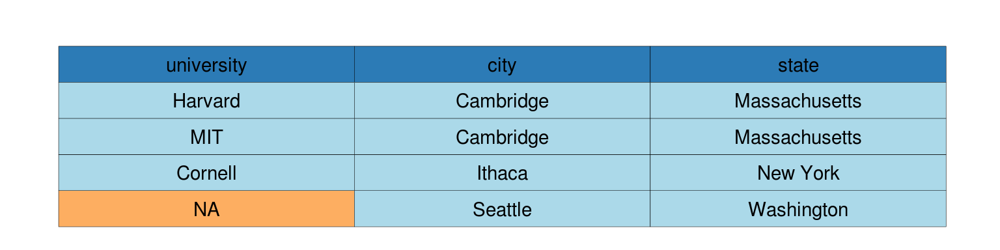
6.3 Inner Join
universities %>%
inner_join(cities, by = "city")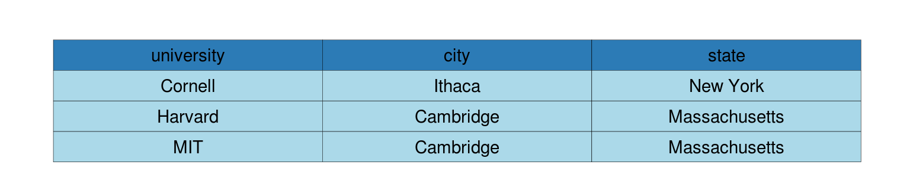
6.4 Full Join
universities %>%
full_join(cities, by = "city")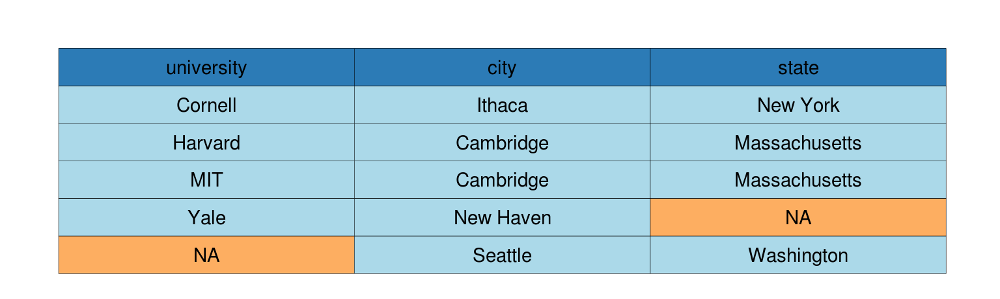
6.5 Different Column Names
In the previous example both our datasets included a column named city. But what if the names of the columns in the two datasets were not the same? For example, let’s take a look at the states table:
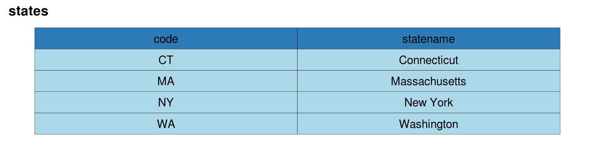
What if we were to merge the cities dataset with states?
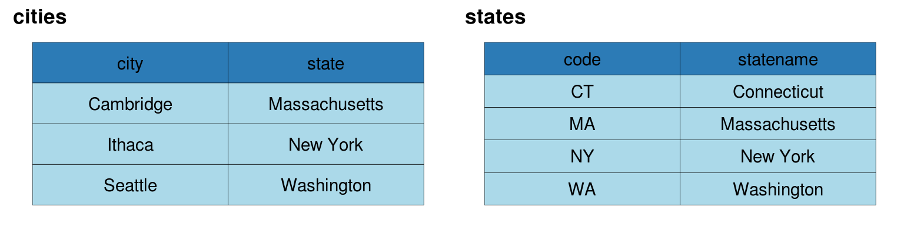
One option would be to rename the columns so their names would match, but you don’t really need to do that. You can simply tell the join functions the mapping between the different names.
cities %>%
left_join(states, by = c("state" = "statename"))In the above example, we’re telling left_join() to merge using the state column from the cities data frame and statename column from the states data frame.
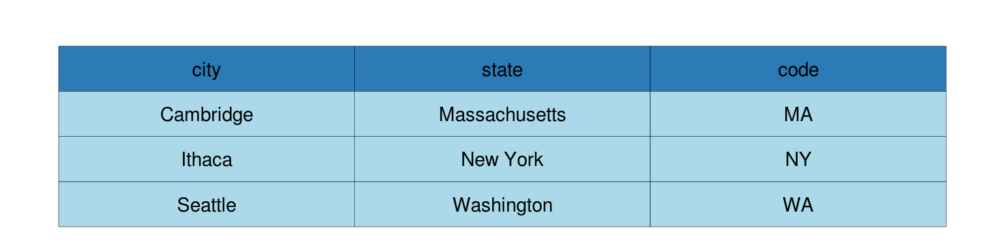
6.6 Exercise
Load the following datasets:
presidents <- read_csv("https://raw.githubusercontent.com/altaf-ali/tidydata_tutorial/master/data/presidents.csv") presidents_home <- read_csv("https://raw.githubusercontent.com/altaf-ali/tidydata_tutorial/master/data/presidents_home.csv")The datasets include names of U.S. presidents:
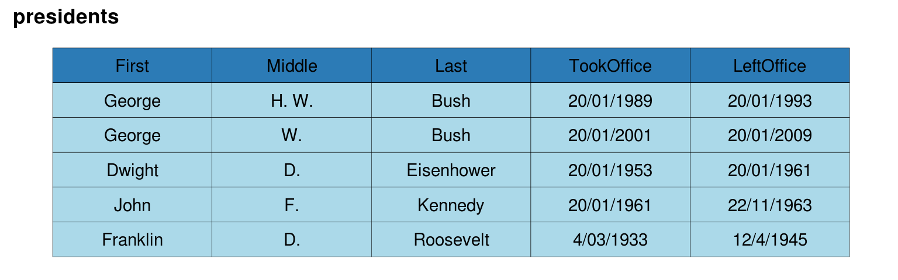
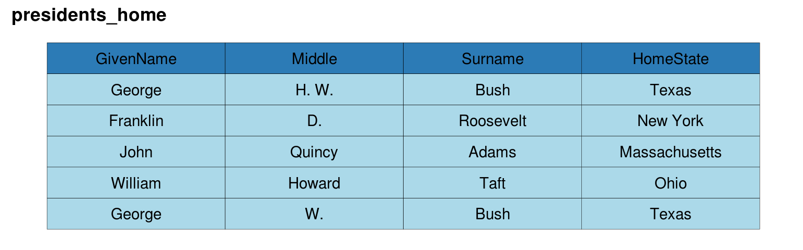
Merge the two datasets so that it ONLY includes observations that exist in BOTH the datasets. There should be no missing values or
NAin the merged table. The results should match the following: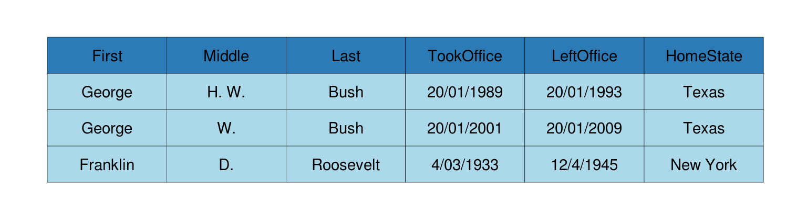
Merge the two datasets so that it includes ALL the observations from both the datasets. Some
TookOffice, LeftOfficeandHomeStatevalues will beNAand that’s ok. The results should match the following: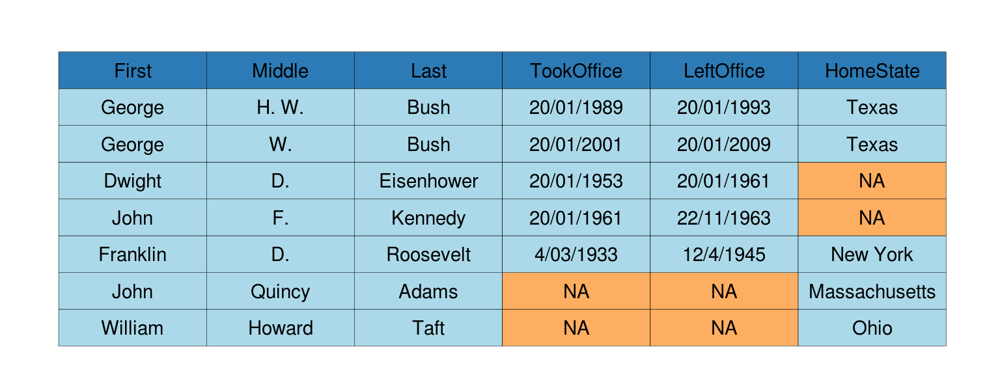
Merge the two datasets so that ALL observations from the
presidentsdatasets are included. SomeHomeStatevalues will beNAand that’s ok. The results should match the following: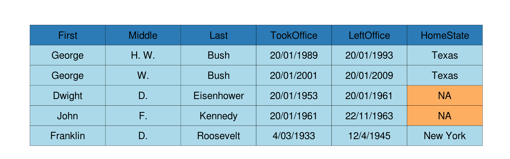
Merge the two datasets so that ALL observations from the
presidents_homedatasets are included. SomeTookOfficeandLeftOfficevalues will beNAand that’s ok. The results should match the following: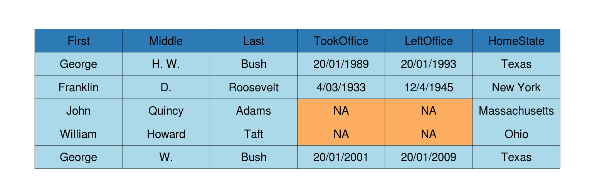